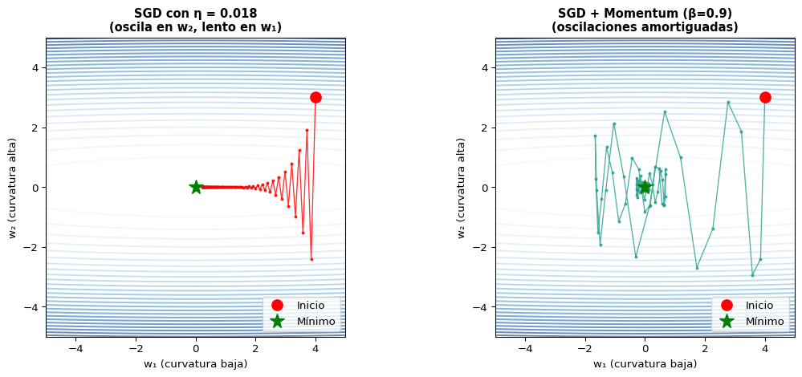
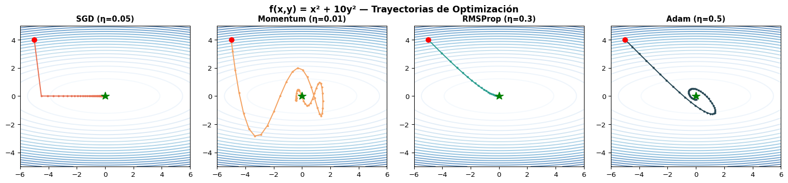

S3: Variantes de Descenso de Gradiente y Regularización
Prof. Francisco Suárez
Universidad Católica Boliviana
2026-03-11
Agenda de Hoy
Primera Parte
🔙 Repaso: SGD y sus limitaciones
📈 Momentum: acelerando la convergencia
⚡ Optimizadores adaptativos: AdaGrad, RMSProp, Adam
Segunda Parte
🛡️ Regularización: L2, Dropout y Early Stopping
📐 Batch Normalization
📅 Learning Rate Scheduling
Bloque 1: El Problema con SGD Vanilla
Recordatorio: Descenso de Gradiente
En S1 y S2, entrenamos redes neuronales con:
\[w \leftarrow w - \eta \nabla_w \mathcal{L}\]
¿Qué funciona bien?
Simple de implementar
Garantía de convergencia (con \(\eta\) adecuado)
Funciona para pérdidas convexas
¿Qué falla?
\(\eta\) fijo para todos los parámetros
Oscilaciones en dimensiones con gradientes dispares
Puede quedarse en mínimos locales
Lento en “valles” estrechos
Visualización del Problema
Función con curvatura desigual:\(f(w_1, w_2) = w_1^2 + 50\,w_2^2\) — el gradiente en \(w_2\) es 50× más fuerte que en \(w_1\).
Code
import numpy as npimport matplotlib.pyplot as plt# f(w1, w2) = w1^2 + 50*w2^2 → gradiente desigual entre dimensionesdef f(w1, w2):return w1**2+50* w2**2def grad_f(w):return np.array([2* w[0], 100* w[1]])w1 = np.linspace(-5, 5, 300)w2 = np.linspace(-5, 5, 300)W1, W2 = np.meshgrid(w1, w2)Z = f(W1, W2)fig, axes = plt.subplots(1, 2, figsize=(12, 5))w0 = np.array([4.0, 3.0])# --- Panel 1: SGD oscila en la dimensión de alta curvatura ---ax = axes[0]ax.contour(W1, W2, Z, levels=30, cmap='Blues', alpha=0.6)ax.set_title('SGD con η = 0.018\n(oscila en w₂, lento en w₁)', fontsize=11, fontweight='bold')ax.set_xlabel('w₁ (curvatura baja)', fontsize=10)ax.set_ylabel('w₂ (curvatura alta)', fontsize=10)w = w0.copy()lr =0.018path = [w.copy()]for _ inrange(80): g = grad_f(w) w = w - lr * g path.append(w.copy())path = np.array(path)ax.plot(path[:, 0], path[:, 1], 'r.-', markersize=4, linewidth=1, alpha=0.8)ax.plot(w0[0], w0[1], 'ro', markersize=10, label='Inicio', zorder=5)ax.plot(0, 0, 'g*', markersize=14, label='Mínimo', zorder=5)ax.set_xlim(-5, 5)ax.set_ylim(-5, 5)ax.set_aspect('equal')ax.legend(fontsize=10, loc='lower right')# --- Panel 2: Momentum suaviza la trayectoria ---ax = axes[1]ax.contour(W1, W2, Z, levels=30, cmap='Blues', alpha=0.6)ax.set_title('SGD + Momentum (β=0.9)\n(oscilaciones amortiguadas)', fontsize=11, fontweight='bold')ax.set_xlabel('w₁ (curvatura baja)', fontsize=10)ax.set_ylabel('w₂ (curvatura alta)', fontsize=10)w = w0.copy()v = np.zeros(2)lr =0.018path_m = [w.copy()]for _ inrange(80): g = grad_f(w) v =0.9* v + g w = w - lr * v path_m.append(w.copy())path_m = np.array(path_m)ax.plot(path_m[:, 0], path_m[:, 1], '.-', color='#2a9d8f', markersize=4, linewidth=1, alpha=0.8)ax.plot(w0[0], w0[1], 'ro', markersize=10, label='Inicio', zorder=5)ax.plot(0, 0, 'g*', markersize=14, label='Mínimo', zorder=5)ax.set_xlim(-5, 5)ax.set_ylim(-5, 5)ax.set_aspect('equal')ax.legend(fontsize=10, loc='lower right')plt.tight_layout()plt.show()

¿Qué vemos?
Izquierda: SGD solo — el gradiente grande en \(w_2\) causa oscilaciones verticales, mientras que el progreso en \(w_1\) es muy lento. Derecha: Con Momentum, la inercia cancela las oscilaciones y acelera hacia el mínimo.
Tres Variantes de SGD
Variante
Tamaño de batch
Ventajas
Desventajas
Batch GD
Todo el dataset
Gradiente estable
Lento, mucha memoria
SGD
1 ejemplo
Rápido, menos memoria
Muy ruidoso
Mini-batch SGD
\(B\) ejemplos
Balance de velocidad y estabilidad
Requiere elegir \(B\)
En la práctica, siempre usamos mini-batch SGD (típicamente \(B = 32, 64, 128\)).
El Verdadero Desafío
El ruido en sí no es tan malo — hasta ayuda a escapar mínimos locales. El problema real es que un solo learning rate no funciona para todas las dimensiones.
Bloque 2: Momentum y Gradientes Adaptativos
SGD con Momentum
Idea: Acumular “velocidad” en la dirección consistente del gradiente.
Acumula gradientes pasados como un promedio exponencial
Suaviza las oscilaciones
Acelera en “cuestas” largas
Analogía: Bola rodando
Code
graph LR A["Inicio"] --> B["Acumula<br>velocidad"] B --> C["Supera<br>baches"] C --> D["Mínimo"] style A fill:#e76f51,color:#fff style B fill:#f4a261,color:#000 style C fill:#e9c46a,color:#000 style D fill:#2a9d8f,color:#fff
graph LR
A["Inicio"] --> B["Acumula<br>velocidad"]
B --> C["Supera<br>baches"]
C --> D["Mínimo"]
style A fill:#e76f51,color:#fff
style B fill:#f4a261,color:#000
style C fill:#e9c46a,color:#000
style D fill:#2a9d8f,color:#fff
Sin momentum: se detiene en cada bache. Con momentum: la inercia ayuda a superar ruido local.
Nesterov Accelerated Gradient (NAG)
Mejora sobre Momentum: Calcular el gradiente en la posición futura estimada.
\(G_t\) no crece sin control: los gradientes viejos se “olvidan” gradualmente. Esto mantiene el learning rate adaptativo durante todo el entrenamiento.
Adam: Lo Mejor de Ambos Mundos
Adaptive Moment Estimation combina Momentum + RMSProp:
Adam aplica L2 regularization al gradiente, lo cual interactúa con la adaptación de momentos. AdamW (Loshchilov & Hutter, 2019) desacopla el weight decay de la adaptación, funcionando mejor para modelos grandes. PyTorch: torch.optim.AdamW.
Comparación Visual de Optimizadores
Code
import numpy as npimport matplotlib.pyplot as plt# Función simple: f(x,y) = x^2 + 10*y^2 (curvatura desigual)def f(x, y):return x**2+10* y**2def grad_f(w):return np.array([2* w[0], 20* w[1]])def run_optimizer(opt_name, w0, lr, steps): w = w0.copy() path = [w.copy()]# State m = np.zeros(2) v = np.zeros(2) G = np.zeros(2)for t inrange(1, steps +1): g = grad_f(w)if opt_name =='SGD': w = w - lr * gelif opt_name =='Momentum': m =0.9* m + g w = w - lr * melif opt_name =='AdaGrad': G = G + g**2 w = w - lr * g / (np.sqrt(G) +1e-8)elif opt_name =='RMSProp': G =0.9* G +0.1* g**2 w = w - lr * g / (np.sqrt(G) +1e-8)elif opt_name =='Adam': m =0.9* m +0.1* g v =0.999* v +0.001* g**2 m_hat = m / (1-0.9**t) v_hat = v / (1-0.999**t) w = w - lr * m_hat / (np.sqrt(v_hat) +1e-8) path.append(w.copy())return np.array(path)# Run optimizersw0 = np.array([-5.0, 4.0])steps =50configs = [ ('SGD', 0.05), ('Momentum', 0.01), ('RMSProp', 0.3), ('Adam', 0.5),]fig, axes = plt.subplots(1, 4, figsize=(16, 3.5))x_grid = np.linspace(-6, 6, 200)y_grid = np.linspace(-5, 5, 200)Xg, Yg = np.meshgrid(x_grid, y_grid)Zg = f(Xg, Yg)colors = {'SGD': '#e76f51', 'Momentum': '#f4a261', 'RMSProp': '#2a9d8f', 'Adam': '#264653'}for ax, (name, lr) inzip(axes, configs): ax.contour(Xg, Yg, Zg, levels=20, cmap='Blues', alpha=0.6) path = run_optimizer(name, w0, lr, steps) ax.plot(path[:, 0], path[:, 1], '.-', color=colors[name], markersize=4, linewidth=1.5) ax.plot(w0[0], w0[1], 'ro', markersize=7) ax.plot(0, 0, 'g*', markersize=12) ax.set_title(f'{name} (η={lr})', fontsize=11, fontweight='bold') ax.set_xlim(-6, 6) ax.set_ylim(-5, 5) ax.set_aspect('equal')plt.suptitle('f(x,y) = x² + 10y² — Trayectorias de Optimización', fontsize=13, fontweight='bold')plt.tight_layout()plt.show()

Resumen de Optimizadores
Optimizador
Actualización
Hiperparámetros
Cuándo usar
SGD
\(w - \eta g\)
\(\eta\)
Modelos simples, convexos
Momentum
\(w - \eta (\beta v + g)\)
\(\eta, \beta\)
Cuando SGD oscila mucho
AdaGrad
\(w - \frac{\eta}{\sqrt{G}} g\)
\(\eta\)
Datos sparse (embeddings)
RMSProp
\(w - \frac{\eta}{\sqrt{G_\gamma}} g\)
\(\eta, \gamma\)
RNNs
Adam
\(w - \eta \frac{\hat{m}}{\sqrt{\hat{v}}}\)
\(\eta, \beta_1, \beta_2\)
Default para casi todo
AdamW
Adam + decoupled WD
\(\eta, \beta_1, \beta_2, \lambda\)
Transformers, modelos grandes
Optimizadores en PyTorch
import torchimport torch.nn as nn# Modelo dummymodel = nn.Sequential( nn.Linear(100, 64), nn.ReLU(), nn.Linear(64, 4))# Diferentes optimizadores — solo cambiar una líneasgd = torch.optim.SGD(model.parameters(), lr=0.01)momentum = torch.optim.SGD(model.parameters(), lr=0.01, momentum=0.9)adagrad = torch.optim.Adagrad(model.parameters(), lr=0.01)rmsprop = torch.optim.RMSprop(model.parameters(), lr=0.001, alpha=0.9)adam = torch.optim.Adam(model.parameters(), lr=0.001)adamw = torch.optim.AdamW(model.parameters(), lr=0.001, weight_decay=0.01)print("Optimizadores disponibles en torch.optim:")for name in ['SGD', 'Adagrad', 'RMSprop', 'Adam', 'AdamW']:print(f" ✓ torch.optim.{name}")
Para modelos de NLP (especialmente fine-tuning de Transformers), Warmup + Cosine Annealing o Linear Warmup + Linear Decay son los estándares. El warmup previene actualizaciones grandes con gradientes ruidosos al inicio.